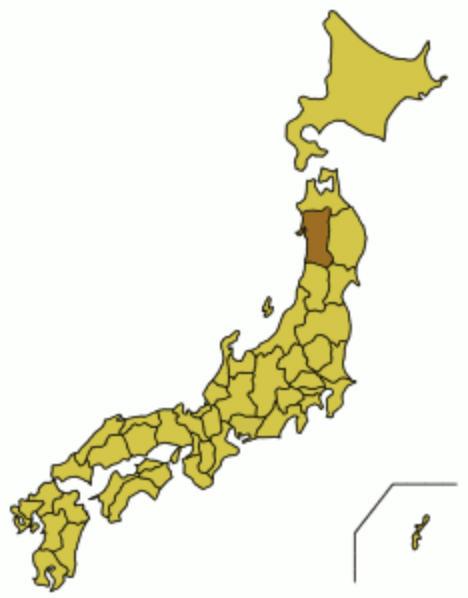

Данные археологических исследований, в результате которых были обнаружены останки шпицеобразных собак, датирующиеся примерно II тысячелетием до нашей эры, и результаты генетических исследований показали, что акита является одной из 14 древнейших пород собак. Помимо всего прочего, сохранились древние рисунки с изображением собак, напоминающих современных акит.
Для сохранения и развития охотничьих качеств в Японии в VI веке были основаны клубы любителей этих собак. Они составляли инструкции по содержанию, разведению, обучению. В XV веке были учреждены племенные книги, в которых записывались кличка, происхождение, окрас и другие сведения.
Первоначально японские собаки имели небольшие или средние размеры. С 1603 года в округе Акита для собачьих боёв использовались акита матаги. С 1868 года их скрещивали с тоса-ину и мастифами, в результате чего размеры собак увеличились, но были потеряны характерные для шпицеобразного типа черты.
Несмотря на то, что в 1908 году собачьи бои были запрещены, порода сохранилась и улучшилась, став японской породой крупных собак, а девять её выдающихся представителей в 1931 году были названы «Памятниками природы».
Во время Второй мировой войны использовали чаще немецких овчарок, владельцы акита стали скрещивать их с немецкими овчарками. После Второй мировой войны порода разделилась на три типа: акита матаги; бойцовая акита; акита, скрещённая с немецкой овчаркой. В США на основе акиты была выведена американская акита. Считается, что в Америку первых японских акита привезла Хелен Адамс Келлер.